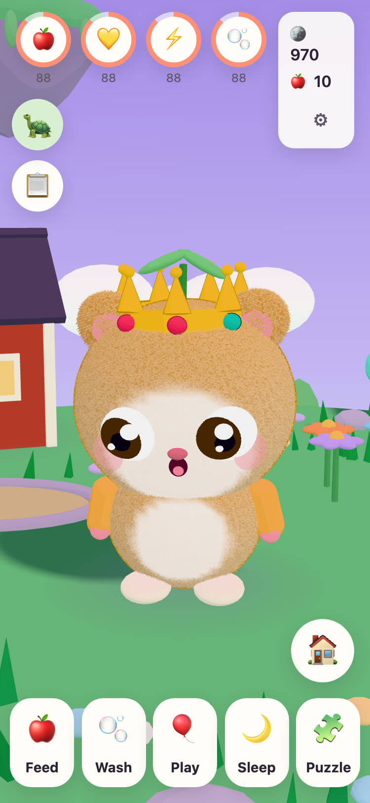
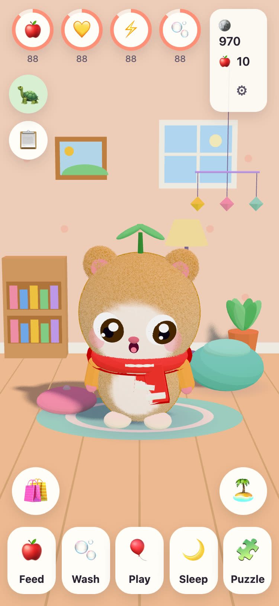
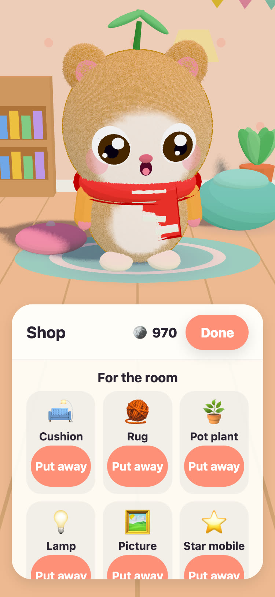
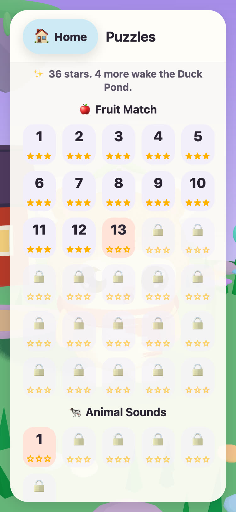

JUNOLittle Worlds
Hatch a Juno, look after it, and solve gentle puzzles that wake up a floating island. A calm game for children aged 6 to 10, on iPhone and iPad.
Hello! I found three warm eggs. Which one is yours?
- No ads
- No tracking
- No account
- No timers or pressure




A little friend of their own
GrandPa Tintin, the old turtle who looks after Meadow Island, has found three warm eggs. Your child picks one and names what hatches. From then on the Juno is theirs to feed, wash, play with and put down for a nap.
-
Pick an egg
Three warm eggs, three colours. Your child chooses one and watches it hatch.
-
Name it, love it
Feed, wash, play and nap. The Juno shows how it feels, and grows as your friendship grows.
-
Wake the island
Every puzzle star brings light back to Meadow Island, until flowers, bees and ducks are home again.
Feed, wash, play, nap
Different foods and toys, bubbles in the bath, and a Juno that shows how it feels. Needs go down slowly and never to zero, so a Juno is never lost.
57 gentle puzzles
Fruit Match, Memory Garden, and Animal and Vehicle Sounds with real recordings. Stars come from moves, never from time, and trying again is always free.
An island that wakes up
The Flower Garden opens with bees, the Duck Pond fills with water and ducks, and seeds grow into apples and strawberries in the garden plots.
A room to make cosy
Coins from puzzles and daily quests buy decorations for the Juno's room and outfits to wear. Nothing in the coin shop costs real money.
Read aloud
GrandPa Tintin reads every line aloud in his own warm voice, for children who cannot read yet. Tap him to hear it again.
A Parent Area
Behind a parental gate: language, reading aloud, sounds, bedtime and a gentle break reminder. At bedtime the Juno sleeps, and the puzzles wait until morning.
Speaks 21 languages
GrandPa Tintin talks to your child in their own language. Choose one in the Parent Area, or let the game follow the device.
English Svenska Dansk Norsk Suomi Deutsch Nederlands Français Español Italiano Português (Brasil) Polski Русский Ελληνικά Türkçe Bahasa Melayu Kiswahili हिन्दी 日本語 한국어 简体中文
Made by a grandfather
JUNO was made in Sweden by a grandfather for his granddaughter: a game he would be happy to see her play. GrandPa Tintin, the turtle in the game, is him.
So the rules are simple. Nothing that pressures, nothing that tricks, and nothing that collects anything about your child.
Free, with no ads
JUNO is free to download and has no ads, no tracking and no account. Everything your child does stays on your device. See the privacy page.
A grown-up can buy JUNO Plus or the Winter Pack in the Parent Area, behind the parental gate. Both are one-off purchases you can restore and share with your family.